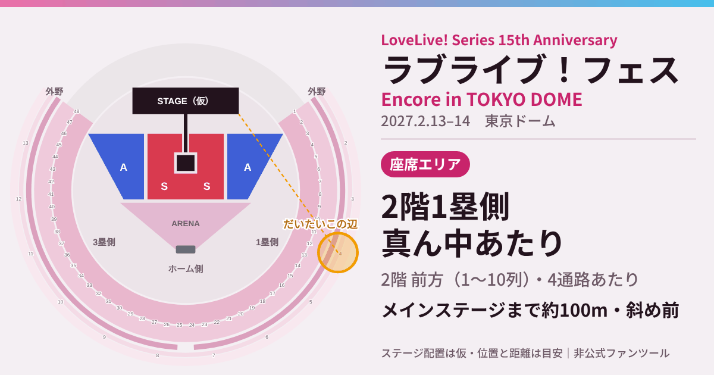

ラブライブ！フェス Encore in TOKYO DOME 2027.2.13–14 東京ドーム
2階1塁側・真ん中あたり

2階 前方（1〜10列）・4通路あたり メインステージまで約100m・斜め前
位置と距離は、公開情報から推定した目安です。ステージ配置はまだ公開されていないため仮のものです。非公式のファンツールで、主催者・会場とは関係ありません。
自分の席を調べる©ゆいゆい
ラブライブ！フェス Encore in TOKYO DOME 2027.2.13–14 東京ドーム

2階 前方（1〜10列）・4通路あたり メインステージまで約100m・斜め前
位置と距離は、公開情報から推定した目安です。ステージ配置はまだ公開されていないため仮のものです。非公式のファンツールで、主催者・会場とは関係ありません。
自分の席を調べる©ゆいゆい